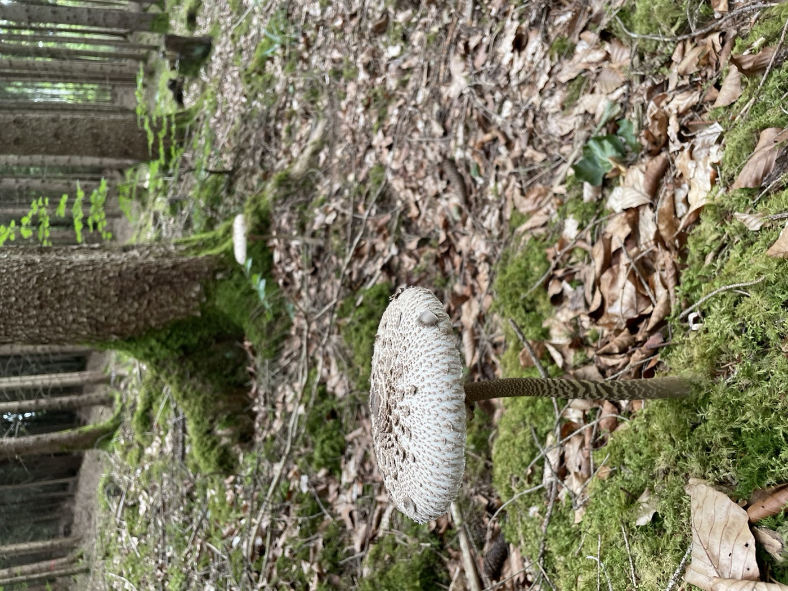
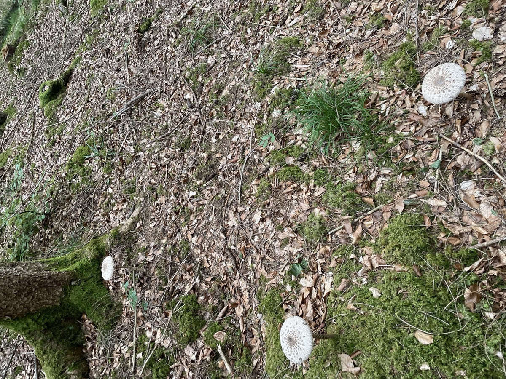
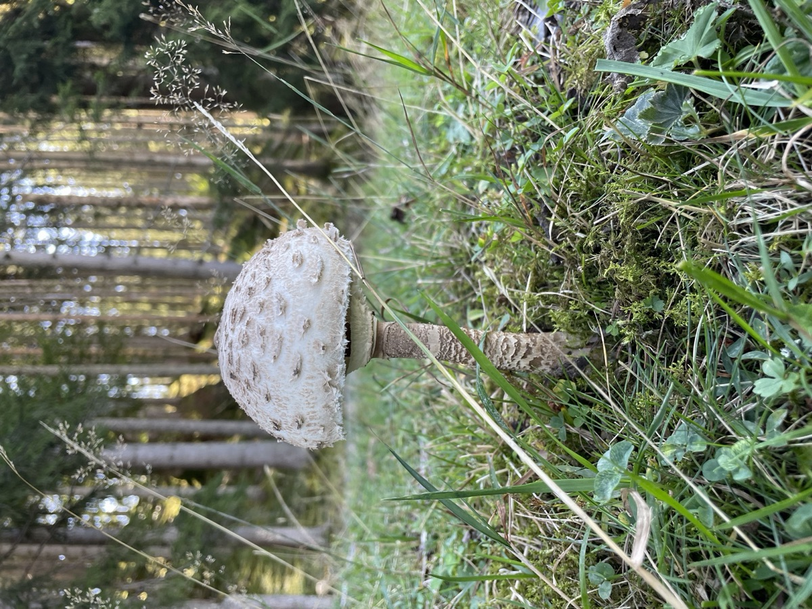
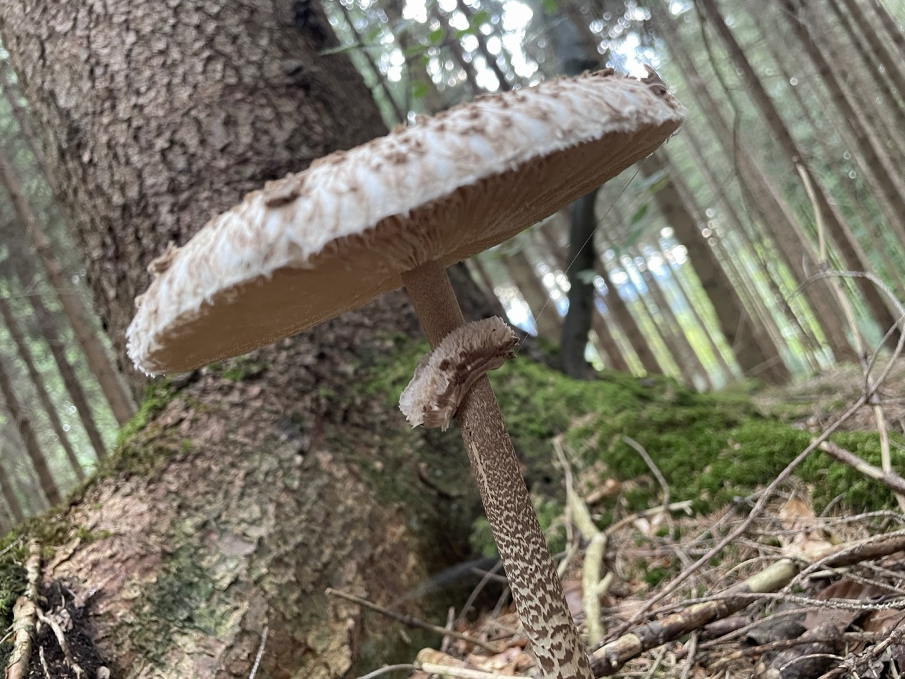
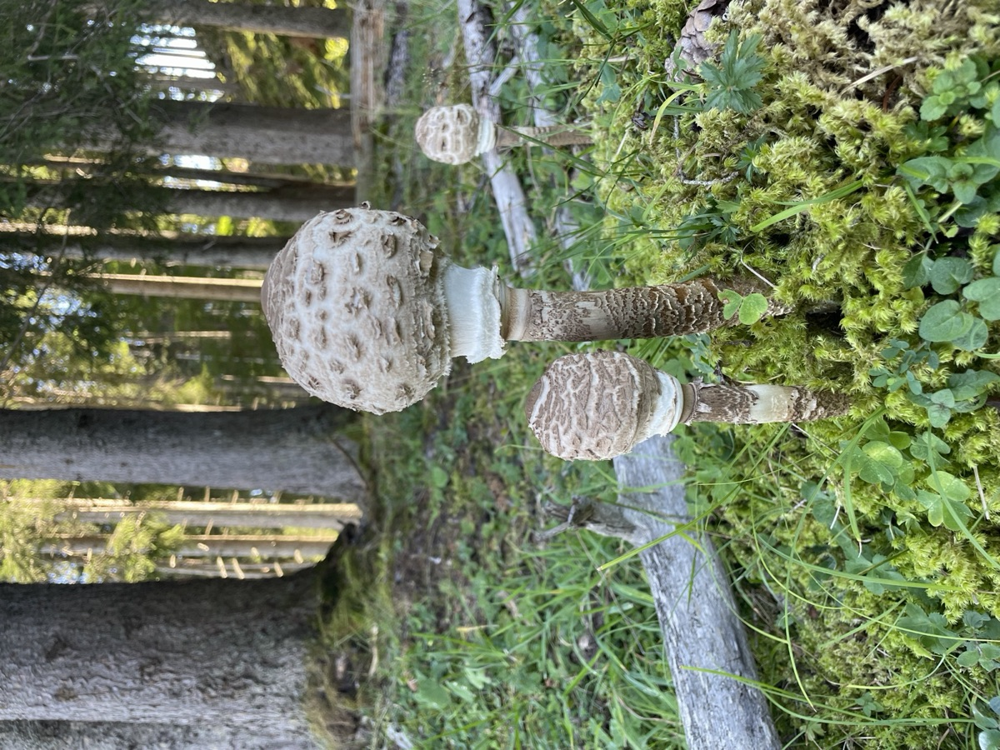
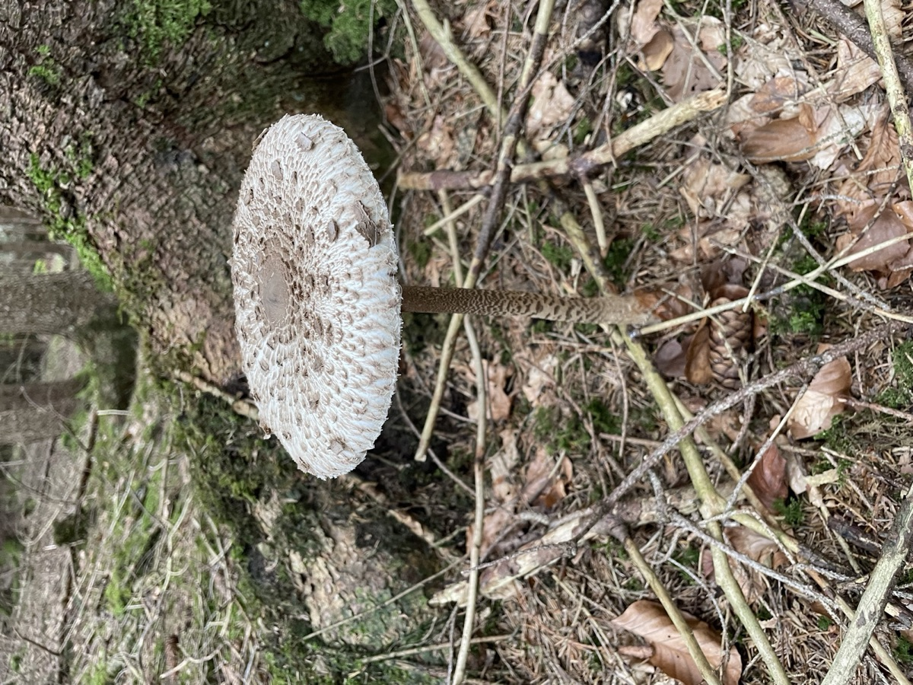
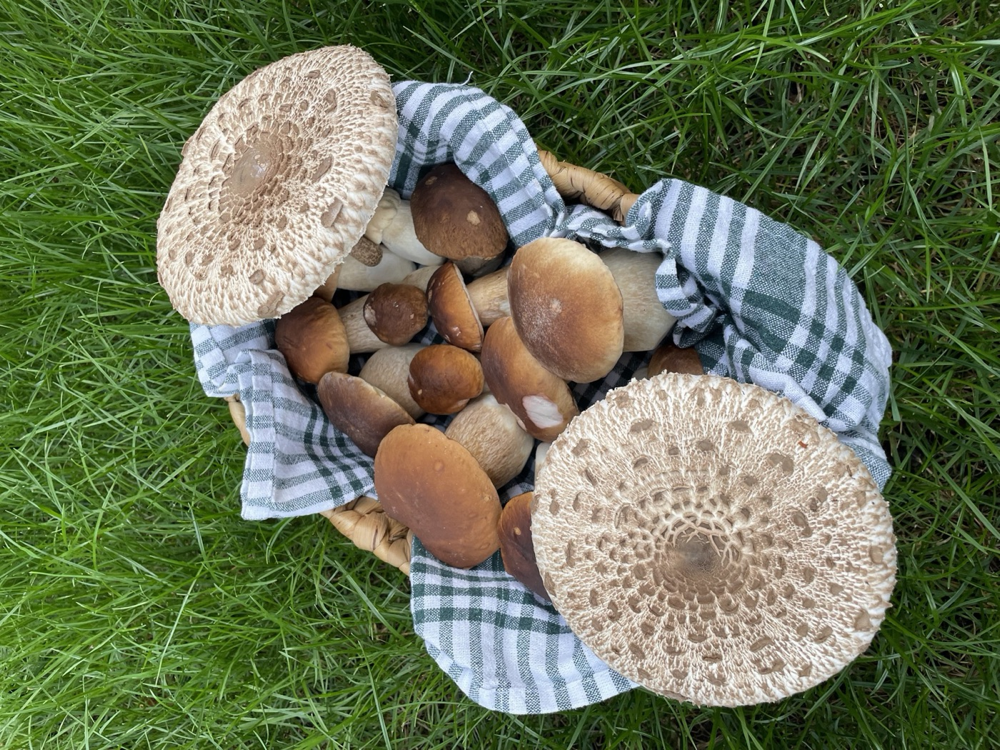

Die meisten Pilze im Wald haben einen Partner: einen Baum, mit dem sie handeln. Der Parasol nicht. Er lebt von dem, was der Wald liegen lässt — und steht deshalb genau dort, wo fast niemand sucht.
Stand September 2026 · Alle Zahlen stammen aus benannten Veröffentlichungen, die am Ende der Seite verlinkt sind.

Mitten im Fichtenwald — aber nicht am Stamm, sondern auf dem Moospolster dazwischen, wo Licht hinkommt. Hinten am Hang steht schon der nächste.
Die kurze Antwort, falls du es eilig hast
Er hat keinen Wirtsbaum. Such nicht die Baumart, sondern die Kante: Waldränder, Lichtungen, grasige Wege, Wiesen.
Drei Merkmale helfen beim Erkennen. Der Ring lässt sich verschieben, der Stiel hat ein Schlangenmuster, das Sporenpulver ist weiß. Eine Verzehrfreigabe ersetzen sie nicht.
Nur die Hüte, immer gut durchgebraten. Und lieber ab und zu als jede Woche.
Die Lebensweise
Er wartet nicht auf den Baum — er räumt auf
Ein Steinpilz hat einen Handel laufen. Sein Geflecht legt sich um die feinen Wurzeln einer Fichte oder Buche und tauscht: Wasser und Nährsalze gegen Zucker aus den Blättern. Nimmt man ihm den Baum weg, ist es vorbei. Deshalb sucht man Steinpilze über den Bestand.
Der Parasol braucht diesen Handel nicht. Er ist ein Zersetzer. Er lebt von dem, was am Boden liegen bleibt: altes Gras, Laub, Nadeln, der lockere Mulm im Oberboden. Er wartet also nicht auf einen Baum, sondern auf einen Haufen Abfall — und auf genug Licht und Luft, damit dieser Abfall überhaupt verrottet.
Das klingt nach einem Detail für Pilzbücher. Es verändert aber alles am Suchen. Wer nach der richtigen Baumart Ausschau hält, sucht am falschen Merkmal. Man muss nach dem Ort suchen, an dem sich Streu sammelt und trotzdem Licht hinkommt. Und der liegt fast immer am Rand.
Der Standort
Warum die Kante besser ist als der Bestand
Stell dir vor, du gehst an einem Septembermorgen in den Wald. Die ersten zwanzig Meter sind Saum: Gras, Brombeeren, ein breiter Weg, Licht von oben. Dann wird es dunkel, die Nadeln liegen dicht, es riecht nach Waldboden. Genau in diesen ersten zwanzig Metern stehen die Parasole — und drinnen praktisch nicht.
Die Fachliteratur beschreibt sein Zuhause als lichte Buchen-, Eichen- und Eichen-Hainbuchenwälder, dazu passende Fichtenforste, Wiesen und Weiden, Parks, Weg- und Waldränder. Der wichtigste Zusatz steht meistens klein dabei: an gut belichteten, gut durchlüfteten Stellen — im dichten Wald ist er selten.
Die Waldkante gibt ihm alles auf einmal. Laub und Gras sammeln sich dort und verrotten, das ist sein Futter. Der Halbschatten der Kronen hält den Boden feucht, aber nicht nass. Und der Wind kommt nicht durch. Der Baum daneben ist also kein Partner — er ist der Windschutz und der Laublieferant.
Die Waldkante von innen nach außen
Wo der Parasol regelmäßig steht. Die Kurve zeigt, wie sich die Chancen verschieben, sobald Licht auf die Streu fällt.
Habitatzonen nach Krieglsteiner & Gminder (2003), Ludwig (2012) und O’Reilly (2016); der Kurvenverlauf stellt die beschriebene Standortgunst dar und ist keine Messreihe · Darstellung: Pilzgebiete

So sieht es meistens aus: verstreut, jeder auf seinem Moos- oder Streuflecken — und keiner direkt am Stamm.

Wo unter Nadelbäumen Gras wächst, kommt Licht durch. Und wo Licht durchkommt, lohnt das Hinschauen.
Übrigens wächst er gern in Ringen. Das Geflecht startet an einem Punkt und breitet sich Jahr für Jahr kreisförmig nach außen aus; die Pilze erscheinen an der aktiven Außenkante. Wer einen solchen Bogen gefunden hat, weiß im nächsten Jahr, wo er nachschauen muss: ein Stück weiter draußen.
Und noch etwas macht Mut: Selten ist er nicht. Im Verbreitungsatlas der Pilze Deutschlands stehen für ihn über 12.700 Fundmeldungen, verteilt über die ganze Republik. Wer ihn nie findet, hat meistens am falschen Ort gesucht — nicht in der falschen Gegend.
Die Saison
Er kommt spät, und er mag es kühl
Der Parasol ist kein Sommerpilz für zwischendurch. Er startet im Juli und macht bis in den November weiter, richtig gut wird es ab August.
Wann du losgehen solltest
Fundmonate in Mitteleuropa, dunkel markiert die stärkste Zeit.
Saisonangabe nach der Fachliteratur und dem Artprofil in der Pilzgebiete-App · Darstellung: Pilzgebiete
Was das Wetter angeht, gibt es eine belastbare Faustregel — allerdings nicht die, die man erwartet. Eine europaweite Auswertung von Fruchtkörperdaten hat gezeigt: Bei Pilzen, die im Herbst fruchten und von totem Material leben, steuert vor allem die Temperatur, wann es losgeht. Der Niederschlag ist eher für die Frühjahrsarten wichtig. Nach dem ersten kühlen Einbruch im Spätsommer lohnt sich der Gang an die Waldkante also mehr als nach einem einzelnen warmen Regentag.
Dieselbe Auswertung zeigt noch etwas Praktisches: Die Höhenlage verschiebt den Zeitpunkt um bis zu einen Monat. Wer im Herbst höher steigt, hängt seine Saison hinten dran.
Die Zahlen, die unter Sammlern kursieren — zwanzig Millimeter Regen, dann zwölf Tage warten — mögen am eigenen Platz gut funktionieren. Untersucht hat das für den Parasol bisher niemand. Das ist Sammlererfahrung, nicht durch Studien belegt, und wir verkaufen es hier nicht als etwas anderes.
In der App
Genau diese Kanten kannst du dir zeigen lassen
Alles, was hier oben steht, steckt in Pilzgebiete als eigener Kartenfilter. Du wählst den Parasol aus, und die Karte zeigt dir die Gebiete, deren Bedingungen zu ihm passen — Waldgebiete und Wiesen- und Grünlandgebiete. Genau die Mischung, auf die es bei ihm ankommt.
Im Artprofil steht, worauf er reagiert und worauf du achten solltest: Waldränder und Lichtungen, breite grasige Waldwege und Säume, offene und halboffene Grünlandbereiche, gut drainierte Stellen ohne dauerhafte Nässe. Dazu die Saison von Juli bis November mit dem Schwerpunkt von August bis Oktober — und bei vielen Gebieten die besten Teilbereiche, also die Stellen mit den stärksten Habitatbedingungen.
Was die Karte kann, ist die halbe Arbeit: Sie sagt dir, wo die Bedingungen stimmen, bevor du losfährst. Was sie nicht kann, sagt sie dir genauso ehrlich — sie sieht keine Fruchtkörper und gibt keine Fundgarantie. Den Rest macht der Blick zur Seite, wenn du aus dem Wald trittst.
Der Parasol ist groß und auffällig. Trotzdem passieren Verwechslungen, besonders wenn nur ein einzelnes Merkmal geprüft wird. Die drei folgenden Merkmale sind wichtige Hinweise, ersetzen aber keine vollständige Bestimmung oder Prüfung vor Ort.
Der Dreifach-Check
Ring anschieben, Stiel anschauen, im Zweifel über Nacht einen Abdruck machen.
Merkmale nach O’Reilly (2016) und Krieglsteiner & Gminder (2003); Sporenfarbe des Grünsporigen Riesenschirmlings nach University of Florida, PP324 · Darstellung: Pilzgebiete

Hier siehst du alles drei auf einmal: den dicken abstehenden Ring, darunter die Natterung — und die cremeweißen Lamellen, die den Stiel nicht berühren.
Wovon du ihn unterscheiden musst
Wer noch so aussieht
Woran du ihn erkennst
Safran- und Gartenriesenschirmlinge
Sie laufen im Anschnitt deutlich safran- bis orangerot an, und der Stiel hat kein Schlangenmuster. Manche gelten als essbar, der Gartenriesenschirmling wird in mehreren Ländern als giftig geführt — und einige Menschen vertragen die ganze Gruppe nicht.
Grünsporiger Riesenschirmling
Kein Schlangenmuster, Lamellen im Alter blassgrün, Sporenabdruck grünlich. In Deutschland praktisch nicht nachgewiesen; in Sizilien und Spanien dagegen etabliert, mit dokumentierten Vergiftungen nach Verwechslung mit dem Parasol. Im Urlaub also mitdenken.
Junge Knollenblätterpilze
Lebensgefährlich. Sie haben eine häutige Scheide am Stielgrund, der Ring lässt sich nicht verschieben, und das Schlangenmuster fehlt. Im geschlossenen Zustand sehen sie Parasol-Knöpfen am ähnlichsten.
Giftige Kleinschirmlinge
Ebenfalls lebensgefährlich. Sie können wie kleine Parasole aussehen. Die Größe allein reicht nicht für eine sichere Abgrenzung.
Die einfachste Sicherheitsregel überhaupt
Kleine „Parasole“ bleiben stehen. Ein echter Parasol kann einen bis zu 25 Zentimeter breiten Hut und einen 12 bis 40 Zentimeter hohen Stiel haben. Gefährliche Kleinschirmlinge sind oft deutlich kleiner; auch große Exemplare brauchen jedoch eine vollständige Bestimmung.
Und eine beliebte Regel stimmt so nicht: „Der Parasol verfärbt sich überhaupt nicht.“ Ein bisschen bräunlich wird er durchaus. Prüfe alle Merkmale, nicht nur die drei hier gezeigten Hinweise.
Was oben steht, ist zum Verstehen gedacht — es ist kein Bestimmungsschlüssel. Das Bundesinstitut für Risikobewertung weist darauf hin, dass Apps Pilze oft nicht eindeutig erkennen, und die Deutsche Gesellschaft für Mykologie rät, sich an geprüfte Pilzsachverständige zu wenden. Pilzgebiete ist eine Karte für Standorte – keine Bestimmungshilfe. Wenn auch nur ein Merkmal nicht passt, gehört der Pilz nicht in den Korb.
Unsicher? Pilze prüfen lassen. Deutschland: Pilzsachverständige der DGfM · Schweiz: amtliche Pilzkontrollstellen der VAPKO · Österreich: Pilzberatungsstellen der Länder und Vereine. Verdacht auf Vergiftung? Bei schweren Beschwerden 112. Sonst: Giftinformationszentrum deines Bundeslandes (DE) · Vergiftungsinformationszentrale +43 1 406 43 43 (AT) · Tox Info Suisse 145 (CH). Pilzreste aufheben.
Was drinsteckt
Ein Pilz, der fast nur aus Wasser besteht — und trotzdem sattmacht
Der Parasol ist zu 82 bis 87 Prozent Wasser. Was übrig bleibt, wenn man ihn trocknet, hat es aber in sich: fast 30 Prozent Eiweiß und rund ein Drittel Ballaststoffe. Für einen Waldpilz ist das ein ordentlicher Wert — und einer der Gründe, warum ein Parasolschnitzel tatsächlich satt macht und nicht nur nach Beilage schmeckt.
Eine Sache hat uns beim Nachlesen überrascht. Im Parasol steckt Melatonin — der Stoff, der bei uns den Schlaf regelt — und dazu die direkte Vorstufe von Serotonin. Das klingt spektakulärer, als es ist: Gemessen wurden Spuren, und was eine Pfanne davon im Menschen anrichtet, hat niemand untersucht. Aber dass ausgerechnet ein Wiesenpilz solche Stoffe herstellt, hätten wir nicht erwartet.
Die Menge
Cadmium: warum „ab und zu“ die ganze Antwort ist
Der Parasol sammelt Schwermetalle ein. Das ist keine Panikmache, sondern gut gemessen — und es steckt ausgerechnet im Hut, also in dem Teil, den man isst. Die spannende Frage ist nur: Wie viel ist das eigentlich, gemessen an dem, was man sowieso jede Woche isst?
Dafür gibt es eine Vergleichszahl. Die europäische Lebensmittelbehörde hat ausgerechnet, wie viel Cadmium ein Mensch pro Woche aufnehmen kann, ohne dass mit Schäden zu rechnen ist: 2,5 Mikrogramm je Kilogramm Körpergewicht. Für einen Erwachsenen mit 70 Kilo sind das 175 Mikrogramm in der Woche. Und eine Portion Parasol von 200 Gramm liefert nach den Messwerten rund 42 davon.
Eine Pfanne Parasol im Wochenbudget
Wochenwert für einen Erwachsenen mit 70 Kilogramm, in Mikrogramm Cadmium.
Wochenwert nach EFSA (2009, bestätigt 2011); Cadmiumgehalt einer Portion nach Falandysz et al. (2017), umgerechnet auf 200 g Hüte · Darstellung: Pilzgebiete
Damit ist auch klar, warum die Empfehlungen so klingen, wie sie klingen. Das Bundesamt für Strahlenschutz rät zu höchstens 200 bis 250 Gramm Wildpilzen pro Woche. Die Fachleute, die den Parasol untersucht haben, raten von häufigem Verzehr seiner Hüte eher ab. Die Rechnung ist ein Studienmittelwert, keine Messung deines Fundes; Cadmium kommt außerdem aus anderen Lebensmitteln.
Noch ein Detail, das in fast jedem Ratgeber falsch steht — und das man einmal gehört haben sollte: Die Messwerte aus Studien beziehen sich auf den getrockneten Pilz, der EU-Grenzwert dagegen auf den frischen. Da ein Parasol zu rund 85 Prozent aus Wasser besteht, liegen zwischen beiden Zahlen etwa ein Faktor sechs. Wer sie direkt nebeneinanderstellt, vergleicht unterschiedliche Bezugsgrößen und kann eine falsche Grenzwertüberschreitung ableiten.
Wo es tatsächlich darauf ankommt
Der Ort schlägt die Art. Eine Untersuchung an 230 Proben von 22 Standorten hat gezeigt, dass derselbe Pilz je nach Fundort um ein Vielfaches auseinanderliegt. Es bringt also mehr, Straßenränder, alte Industrieflächen und Klärschlammäcker zu meiden, als über Durchschnittswerte zu grübeln.
Schwangere, Stillende und kleine Kinder sollten bei Wildpilzen zurückhaltend sein — das gilt für alle Arten, die Schwermetalle einsammeln.
Eine gute Nachricht zum Schluss: Beim Thema Cäsium gehört der Parasol zu den gering belasteten Arten. Während manche Pilze in Südostbayern bis heute hohe Werte zeigen, lag er in den Messreihen des Bundesamts für Strahlenschutz sehr niedrig. Mehr dazu im Cäsium-Beitrag
Die Küche
Warum ausgerechnet er das beste Schnitzel gibt
Der Parasol ist wahrscheinlich der einzige Waldpilz, den Leute sammeln, um ihn zu panieren. Das hat einen handfesten Grund: Sein Hut ist flach, groß und faserarm — er ist praktisch schon ein Schnitzel, man muss ihn nur noch panieren.
Dazu die 85 Prozent Wasser. Legt man den Hut in eine richtig heiße Pfanne, verdampft das Wasser an der Oberfläche, und die Panade wird knusprig, während der Pilz innen gerade gar wird. Daraus folgt die wichtigste Küchenregel überhaupt: trockentupfen, nicht waschen. Ein gewässerter Hut bringt zusätzliches Wasser mit, die Panade dämpft dann nur noch vor sich hin und löst sich ab.
Verwendet wird nur der Hut. Der Stiel ist zäh und faserig, den kann man nicht kauen. Wegwerfen muss man ihn trotzdem nicht: getrocknet und gemahlen ergibt er ein kräftiges Pilzpulver für Soßen und Suppen.
Jung oder aufgeschirmt?
Junge Parasole im „Paukenschlägel“-Stadium — der Schirm noch geschlossen wie ein Trommelstock — sind zarter. Der voll aufgeschirmte Hut ist dafür die bessere Schnitzelbasis: flach, gleichmäßig dick, groß.
Es gibt aber ein Argument, das jede Geschmacksfrage schlägt. Solange der Schirm geschlossen ist, kannst du wichtige Merkmale nicht prüfen. Der Ring klebt noch fest, die Lamellen sind verdeckt, ein Sporenabdruck ist nicht zu bekommen. Und genau in diesem Stadium sehen junge Knollenblätterpilze am ähnlichsten aus. Bei aufgeschirmten Exemplaren lassen sich mehr Merkmale prüfen; das allein ist keine Verzehrfreigabe.

Paukenschlägel: zarter — aber Ring, Lamellen und Sporenpulver sind noch nicht prüfbar.

Voll aufgeschirmt, mit dem typischen Buckel in der Mitte: die Schnitzelform — und das Stadium, in dem wichtige Merkmale besser prüfbar sind.
Welchen du stehen lässt
Die Lamellen sind beim frischen Parasol weiß bis cremefarben und stehen frei — sie berühren den Stiel nicht. Im Alter werden sie blassrosa. Ab wann ein Exemplar zu alt ist, hat niemand wissenschaftlich festgelegt; was Pilzsachverständige übereinstimmend sagen, ist Erfahrungswissen, aber verlässliches:
Vergilbende oder bräunende Lamellen, vor allem wenn sie feucht und schmierig wirken.
Madengänge im Hutfleisch oder am Stielansatz.
Muffiger oder säuerlicher Geruch statt mild und nussig.
Weiche, wässrige Stellen im Hut.
Dahinter steckt simple Küchenlogik: Ein Pilz aus viel Wasser und viel Eiweiß ist ein prima Nährboden — für alles. Ein guter Teil dessen, was Leute für eine Pilzvergiftung halten, ist schlicht verdorbener Pilz.
Roh ist er nichts
Viele Speisepilze sind roh unverträglich. Ihre Giftstoffe halten Hitze nicht aus — die Deutsche Gesellschaft für Mykologie nennt 15 Minuten kochen oder braten und führt die Riesenschirmlinge ausdrücklich in dieser Gruppe. Die alte französische Idee, junge Schirme roh in den Salat zu schneiden, gilt heute als überholt.
Und selbst richtig bestimmt und gut durchgegart verträgt ihn nicht jeder: Die DGfM hat einen Fall dokumentiert, in dem eine Frau eine Stunde nach panierten Parasolschnitzeln heftig reagierte — obwohl sie dieselbe Zubereitung zwei Jahre zuvor gut vertragen hatte. Bei der ersten Mahlzeit einer neuen Art gilt deshalb: kleine Portion, und einen Rest kühl aufheben.
Was man daraus machen kann
Das Schnitzel
Hut trockentupfen, Stiel abdrehen. Mehl, Ei, Semmelbrösel — und dann in reichlich heißem Fett von beiden Seiten goldbraun. Zitrone dazu, sonst nichts.
Gefüllt aus dem Ofen
Große Hüte mit den Lamellen nach oben, gefüllt mit Kräuterquark, Tomate und Käse. Der Hut trägt die Füllung wie ein Teller.
In Butter mit Kräutern
In Streifen geschnitten, scharf angebraten, erst am Ende salzen. Petersilie, Thymian, ein Spritzer Zitrone.
Pilzpulver aus den Stielen
Stiele trocknen, mahlen, luftdicht aufheben. Ein Teelöffel gibt Soße, Risotto oder Suppe eine dunkle Pilznote.

Eine Tour, zwei Suchmuster: die Steinpilze aus dem Bestand, die Parasole von der Kante. Am Hut oben rechts sieht man die freien, cremefarbenen Lamellen und den Stielrest mit dem Ringansatz.
Und wenn es zu viel wird: Einfrieren schlägt Trocknen. Das ist untersucht — von allen Konservierungsarten bleibt die Zusammensetzung beim Einfrieren am nächsten am frischen Pilz. Am besten panieren, kurz anbraten, abkühlen lassen, einfrieren. Im Januar kommt das Schnitzel dann aus dem Ofen.
Fazit
Such die Kante, nicht den Baum
Wo. Wo Licht auf Streu fällt: Waldränder, Lichtungen, grasige Wege, Wiesen. Im dichten Bestand steht er fast nie.
Wann. Juli bis November, am besten August bis Oktober. Nach dem ersten kühlen Einbruch lohnt es besonders.
Worauf achten. Verschiebbarer Ring, genatterter Stiel und weißes Sporenpulver sind wichtige Merkmale. Sie ersetzen keine vollständige Bestimmung; kleine Schirmlinge bleiben stehen.
Wie oft. Nur die Hüte, gut durchgebraten, und lieber ab und zu als jede Woche.
Das Schöne am Parasol ist, dass er keine Geheimstelle braucht. Er steht an Orten, an denen die meisten Leute nur vorbeigehen — auf dem Weg zum eigentlichen Pilzplatz. Es reicht, einmal zur Seite zu schauen.
Jede Zahl auf dieser Seite stammt aus einer der folgenden Veröffentlichungen. Grafiken und Text sind eigene Darstellungen, die Fotos eigene Aufnahmen. Wo wir etwas als Erfahrungswissen bezeichnen, steht bewusst keine Studie dahinter.
Adamska, I.; Tokarczyk, G. — Possibilities of Using Macrolepiota procera in the Production of Prohealth Food and in Medicine. International Journal of Food Science, 2022. Grundlage von Wassergehalt, Eiweiß- und Ballaststoffanteil, Melatonin und Serotonin-Vorstufe, dem Hinweis „nur die Hüte“ sowie der Aussage zum Einfrieren. doi.org/10.1155/2022/5773275
Falandysz, J. et al. — Analysis of some metallic elements and metalloids composition and relationships in parasol mushroom Macrolepiota procera. Environmental Science and Pollution Research, 2017. Grundlage des Cadmiumgehalts je Portion und der Empfehlung, seine Hüte nicht häufig zu essen. doi.org/10.1007/s11356-017-9136-9
EFSA — Statement on tolerable weekly intake for cadmium. EFSA Journal, 2011 (Bestätigung des Werts von 2009). Grundlage des Wochenwerts von 2,5 Mikrogramm je Kilogramm Körpergewicht. doi.org/10.2903/j.efsa.2011.1975
Jančo, I. et al. — Mercury Content in Macrolepiota procera and Soil. Journal of Fungi 7 (2021) 772. 230 Proben von 22 Standorten; Grundlage der Aussage, dass der Fundort stärker wiegt als die Art. doi.org/10.3390/jof7090772
Bundesamt für Strahlenschutz — Radioaktives Cäsium: Maßvoller Verzehr von Wildpilzen ist unbedenklich. Pressemitteilung vom 05.09.2025. Grundlage der Empfehlung von 200 bis 250 Gramm Wildpilzen pro Woche, ausdrücklich auch mit Blick auf Blei, Quecksilber und Cadmium. bfs.de
Bundesamt für Strahlenschutz — Radioaktive Kontamination von Speisepilzen. Berichtsreihe. Grundlage der niedrigen Cäsiumwerte beim Parasol. BfS-Bericht (PDF)
Verordnung (EU) 2023/915 über Höchstgehalte für bestimmte Kontaminanten in Lebensmitteln. Grundlage des Cadmium-Höchstgehalts für wildwachsende Pilze, bezogen auf Frischgewicht. EUR-Lex
Andrew, C.; Büntgen, U.; Egli, S.; Kauserud, H. et al. — Explaining European fungal fruiting phenology with climate variability. Ecology 99 (2018) 1306–1315. Grundlage der Aussage, dass bei herbstlichen Zersetzern die Temperatur führt und die Höhenlage den Zeitpunkt um bis zu einen Monat verschiebt. doi.org/10.1002/ecy.2237
Krieglsteiner, G. J.; Gminder, A. — Die Großpilze Baden-Württembergs, Band 4. Ulmer, 2003 · Ludwig, E. — Pilzkompendium, Band 3, 2012. Grundlage der deutschen Standortangaben und der Maße von Hut und Stiel.
O’Reilly, P. — Macrolepiota procera, Parasol Mushroom. First Nature, 2016. Grundlage der saprotrophen Lebensweise, der Habitatbeschreibung „Waldlichtungen und Grasflächen neben Wald“, des Ringmerkmals, der Natterung und des weißen Sporenpulvers. first-nature.com
Verbreitungsatlas der Pilze Deutschlands (DGfM). Grundlage der über 12.700 Fundmeldungen und der Angabe, dass der Grünsporige Riesenschirmling in Deutschland praktisch nicht nachgewiesen ist. pilze-deutschland.de
Negrini, V. M.; Lonati, D.; Locatelli, C. A. et al. — Case series of Chlorophyllum molybdites intoxication in Sicily. Annali dell’Istituto Superiore di Sanità 58 (2022) 213–217. Grundlage der dokumentierten Vergiftungen nach Verwechslung mit dem Parasol. PubMed 36128971
Deutsche Gesellschaft für Mykologie — Vergiftungssyndrome, Beschreibung, Symptome und Karenzzeiten (Stand 22.01.2023) sowie Vergiftungsfälle, Eintrag Parasol, Jahrgang 2010. Grundlage der 15-Minuten-Regel und des dokumentierten Falls einer Unverträglichkeit trotz korrekter Zubereitung. dgfm-ev.de
University of Florida / IFAS — The Green-Spore Poison Parasol Mushroom, Chlorophyllum molybdites, PP324. Grundlage der grünen Sporenpulverfarbe des Doppelgängers. ask.ifas.ufl.edu
Hinweis. Diese Seite fasst veröffentlichte Fachliteratur zusammen und ist keine Behördenauskunft, keine Ernährungsberatung und vor allem keine Bestimmungshilfe und keine Verzehrfreigabe. Der Abschnitt zu Merkmalen und Doppelgängern erklärt, worauf es ankommt — er ersetzt keinen Bestimmungsschlüssel. Sammle nur Pilze, die du sicher kennst, und lass im Zweifel eine Pilzsachverständige oder einen Pilzsachverständigen darüberschauen; die Deutsche Gesellschaft für Mykologie vermittelt sie regional. Messwerte zu Schwermetallen stammen von gezielt beprobten Standorten und gelten nicht für deinen Fundort. Pilzgebiete zeigt mögliche Habitate, keine Fundgarantie.
![Pilzgebiete]()